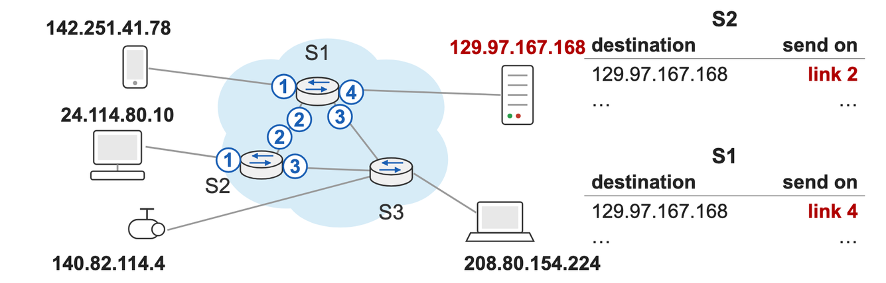

Lecture 13: Managing scale through aggregation and hierarchies
CS 456/656, Fall 2026 · Part III: Scaling to the whole planet
How this lecture works
This page is designed to mimic, as much as possible, the interactive in-person experience.
- It goes one step at a time. In most steps, you first do something, e.g., write down what you think or solve a small puzzle, similar to our in-class discussions. After engaging with the question or puzzles, you can move on to the next step.
- What you write in the boxes is not graded. The main goal is for you to pause and think, as you would in class. So, I encourage you to take your time with it, as if you are attending the lecture.
- To make this a bit more fun, I have added a few features that let you collect points as you go. This will not be reported back to me and it will not impact your grade in any way. It is just for a bit of fun.
- If you have a question, press Ask a question at the bottom right, at any point. Your questions are collected at the end, and I will answer them.
- Your progress is saved in this browser, so you can stop and come back later.
- This page works best on a laptop. On a phone, the figures are small.
- The Check buttons in the exercises may be a bit flaky, since this page was put together a bit last minute. If you get an error message that does not make sense, please let me know.
Recap: IPv4 addresses as globally unique identifiers
In our lectures, we have talked about how, when an application wants to send data, it tells the transport layer something like "I want to send data to process A at endpoint X". The transport layer then asks the network layer to "deliver this segment to endpoint X".
Inside the network, each switch on the path looks up endpoint X in its forwarding table, and sends the packet on the corresponding link.
For all of this to work, we need globally unique identifiers for each network endpoint. For a long time, IPv4 addresses have played that role. An IPv4 address is a 32-bit integer. We usually write it as four numbers separated by dots, one for each byte. For example, 2170660776 is written as 129.97.167.168.
Each byte is between 0 and 255, so the addresses go from 0.0.0.0 to 255.255.255.255.

In lecture 12, we talked about the Domain Name System (DNS), which helps endpoints find the IP address of the endpoints they want to communicate with. Today, we look at how these IP addresses are assigned and used for forwarding and routing in a large-scale network.
How can we handle billions of IP addresses?
So far, we have used the generic name switch for network devices. In the Internet, the network devices that use IPv4 addresses to forward packets are specifically called routers. So, we will use that name for these specific network devices from now on.
Now, on to our discussion. IPv4 addresses are 32-bit unsigned integers. So, there are about 4.3 billion IPv4 addresses in total.
What does this mean for forwarding? Without any further strategy, a router ends up with a separate entry in its forwarding table for each endpoint. With billions of endpoints, that is billions of entries in every router. Even at only 5 bytes for an entry (4 for the address and 1 for the link), 4.3 billion entries take more than 20 GB. And the lookup has to be fast: on a 100 Gbps link, the router outputs a 1000 B packet every 80 ns (lecture 8). It is simply not practically feasible to have a memory of that size and search it that fast.
What about routing? In lecture 9, the routing algorithms in the routers' control planes exchange messages about the endpoints they can reach. In both link state and distance vector, the messages include per-endpoint information. With billions of endpoints, these messages will be very large.
So this, clearly, does not scale. Can we do better by being more careful about how we assign IPv4 addresses to endpoints?
Consider the following network. There are twelve endpoints, E1 to E12, connected through four routers, R1 to R4. Suppose these endpoints can take any IP addresses from 10.0.0.0 to 10.0.0.15 (16 addresses total).
R1's forwarding table has one entry for each endpoint, so 12 entries total, as shown below.
Suppose you can (1) change the assignment of IP addresses to endpoints, and (2) modify what is included in the "destination" column of the table, e.g., more than one IP address. How can you minimize the number of entries that need to be kept in R1's forwarding table?
Grouping addresses
Here is the network from Exercise 1 again, with the IP addresses that the endpoints started with:
R1 has only three links. So all it needs to know about a destination is which of the following three groups the destination belongs to: the endpoints reached through link 1, through link 2, or through link 3. One entry for each group is enough. That is three entries instead of twelve.
One way to define these "groups" is as a list of IP addresses:
| destination | send on |
|---|---|
| 10.0.0.1, 10.0.0.4, 10.0.0.7, 10.0.0.11 | link 1 |
| 10.0.0.0, 10.0.0.3, 10.0.0.9, 10.0.0.13 | link 2 |
| 10.0.0.2, 10.0.0.5, 10.0.0.8, 10.0.0.12 | link 3 |
This still does not scale well though. If there were 1,000 endpoints behind R2, the first entry would have to list 1,000 addresses. Sure, the table would have fewer entries, but the router still has to store and search as many addresses as before.
Instead, suppose we had assigned IP addresses differently, for example:
In the above assignment, the IP addresses "behind" each router form a consecutive range. This way, we can aggregate all of them into a range, and rewrite the table the following way:
| destination | send on |
|---|---|
| 10.0.0.0 to 10.0.0.3 | link 1 |
| 10.0.0.4 to 10.0.0.7 | link 2 |
| 10.0.0.8 to 10.0.0.11 | link 3 |
This is the basis of how the Internet handles routing and forwarding for billions of addresses. Endpoints that are close to each other in the network should get addresses that are close to each other, so we can aggregate their forwarding and routing decisions and refer to them in a compact way.
IPv4 Prefixes
IPv4 prefixes are a way to compactly represent a range of IPv4 addresses.
Take the range 10.0.0.0 to 10.0.0.3 from the last table. Here are its four addresses in binary:
10.0.0.0 00001010.00000000.00000000.00000000
10.0.0.1 00001010.00000000.00000000.00000001
10.0.0.2 00001010.00000000.00000000.00000010
10.0.0.3 00001010.00000000.00000000.00000011
They all start with the same 30 bits, and the last two bits take every possible value (00, 01, 10, 11). So the range is exactly the set of all IPv4 addresses that have the same first 30 bits as 10.0.0.0, that is:
00001010.00000000.00000000.000000**
This set can be represented as an IP prefix, written as 10.0.0.0/30.
In general, a prefix a.b.c.d/n represents all the IPv4 addresses whose first n bits are the same as the first n bits of a.b.c.d. The remaining 32 − n bits can be anything. For example, 129.97.0.0/16 is all the addresses whose first two bytes are 129.97. The shorter the prefix, the more addresses it represents: a /30 is 4 addresses, a /24 is 256, and a /32 is a single address. The addresses that a prefix represents are also called a block of addresses.
With prefixes, R1's forwarding table from Exercise 1 will look like this:
| destination | send on |
|---|---|
| 10.0.0.0/30 | link 1 |
| 10.0.0.4/30 | link 2 |
| 10.0.0.8/30 | link 3 |
For each entry, R1 only compares the first 30 bits of the destination address. This is what real routers store in their forwarding tables: comparing the first n bits is much more efficient to do in hardware compared to the previous tables we have seen in this lecture, and a prefix is easy to divide into smaller prefixes, as we will see.
How many addresses are in 129.97.0.0/16?
Which of these addresses is in 10.1.2.0/24?
Is 10.1.3.200 in 10.1.2.0/23?
Suppose an entry in the forwarding table needs to match exactly one IP address, 129.97.167.168. Which of the following prefixes can be used in that entry?
The Internet is a network of networks
So far, we have talked about "the network" as if it were one network, run by one operator. The Internet is not like that. It is tens of thousands of networks, each run by a different organization, that are connected to each other. IP addresses are assigned to these networks in blocks, and the blocks get smaller as we go from the middle of the Internet out towards its edge.
In the middle are the largest Internet service providers (ISPs). There are only a handful of them. Their networks span countries and continents, and they are connected to each other. Together, they are the core of the Internet. ISPs X and Y in the above figure are examples of such ISPs.
They have the largest blocks. IANA (the Internet Assigned Numbers Authority) has authority over the whole 32-bit address space, and gives very large blocks to five regional registries. For Canada and the United States, the registry is ARIN. A registry gives blocks to ISPs in its corresponding region. For example, in the figure above, X has been assigned the block 10.0.0.0/8, about 16 million addresses.
The Internet also has smaller ISPs, e.g., those that cover a smaller country or a region. There are thousands of these. Each one is a customer of one or more larger ISPs, and gets a part of their blocks. For example, in the figure, B and E are customers of X. X is in charge of giving them parts of its address space. In the example above, X gives 10.8.0.0/16 to B and 10.20.0.0/16 to E.
At the edge are the networks that connect to the endpoints, e.g., the network of a university, a hospital, a company, or your home. Each one gets its connection to the rest of the Internet and its address block from an ISP. In the example above, ISP B gives 10.8.0.0/22 to Lakeside College, and 10.8.4.0/22 to Maple Bank.
Inside a network at the edge, an organization can further divide its address block among the parts of its own network (e.g., buildings or departments). When an endpoint joins a network, it is assigned an IP address from the address block assigned to that network.
Suppose you run the network of Lakeside College. ISP B has given you 10.8.0.0/22, which is the 1,024 addresses from 10.8.0.0 to 10.8.3.255. The campus has three buildings, each with its own router, connected to the main router M.
How would you divide your IP address space between the three buildings, such that there is some left unused for future buildings?
What do the forwarding tables look like?
Take one path from the core to the edge in the figure: from large ISP X, through ISP B, to Lakeside College (in red below).
Here is a closer look at that path, with one router in each network: C in the core, B in between, and M at the edge.
Suppose the college divided its block as follows: the Library has 10.8.0.0/23, Engineering has 10.8.2.0/24, and the Residence has 10.8.3.0/25.
| destination | send on |
|---|---|
| 10.8.0.0/23 | link 2 (Library) |
| 10.8.2.0/24 | link 3 (Engineering) |
| 10.8.3.0/25 | link 4 (Residence) |
| 0.0.0.0/0 | link 1 (ISP B) |
The last entry, 0.0.0.0/0, has zero bits in its prefix, so every address matches it. It is called the default entry: everything that is not in the college goes to ISP B. Without it, M would need an entry for every other prefix in the Internet.
You may have noticed that it is possible for a packet to match two entries in this table. We will talk about this later in the lecture. For now, assume that if a packet's destination address matches anything other than the default entry, the router will use that entry for forwarding it.
| destination | send on |
|---|---|
| 10.8.0.0/22 | link 2 (Lakeside College) |
| 10.8.4.0/22 | link 3 (Maple Bank) |
| ... | (its other customers) |
B does not know about the buildings of the college. It has one entry for each of its customers, including Lakeside College.
| destination | send on |
|---|---|
| 10.8.0.0/16 | link 1 (ISP B) |
| 20.0.0.0/8 | link 2 (large ISP Y) |
| ... | (many more) |
C has one entry for ISP B and all of its customers, and one entry for everything in large ISP Y's block.
Note the pattern. The closer a router is to the endpoints, the longer the prefixes in its forwarding table. A packet for a laptop in the Library, 10.8.0.57, matches a /16 at C, a /22 at B, and a /23 at M.
What if a packet matches more than one entry?
With prefixes, it is possible for a destination address to match more than one entry in a forwarding table.
Consider a university that has the address block 129.97.0.0/16. Router R connects the university to its Internet provider through link 1. The campus network has routers of its own (P and Q in the figure), and R reaches it through link 2. The CS department uses a part of the block, 129.97.167.0/24. Its router, D, is connected to the campus network (to Q), like the router of every other department. But the department sends and receives a lot of traffic, so D also has its own direct link to R, link 3.
Here is what R's forwarding table will look like:
| destination | send on |
|---|---|
| 129.97.0.0/16 | link 2 |
| 129.97.167.0/24 | link 3 |
Packets destined to any IPv4 address in 129.97.167.0/24 will match both entries.
Suppose a packet with destination 129.97.167.168 arrives at R. Which entry should R use for forwarding it, and why?
When a packet matches multiple entries, routers choose the one with the longest matching prefix. This is called longest prefix match. So, a packet for 129.97.167.168 will go on link 3.
Why longest prefix matching? A longer prefix is for a smaller group of addresses. So, of the entries that match, the one with the longest prefix is the most specific thing the router knows about this destination. Here, the /16 entry says how to reach the university's addresses in general. The /24 entry says how to reach the CS department in particular, and it is there because the direct link is a better path for the department than going through the campus network.
The /16 entry is still useful for the CS department. If link 3 fails, R removes the /24 entry. Packets for the CS department then match only the /16 entry, and reach D through the campus network (R, P, Q, D).
Let's look at the problems we started with
At the start, we saw two problems with having one forwarding table entry for each endpoint. Let's take a look at how hierarchical addressing helps with them.
Forwarding. "With billions of endpoints, that is billions of entries in every router." With prefixes, a router needs one entry for each prefix, not for each endpoint.
Routing. "In both link state and distance vector, the messages include per-endpoint information. With billions of endpoints, these messages will be very large." With prefixes, the exchanged messages are about prefixes (not necessarily individual endpoints) and they include per-prefix information. For example, here is what R2 tells R1 in distance vector routing, without and with prefixes:
A hierarchical structure is not always the answer
Assigning IP addresses along the hierarchy of the Internet is what lets us handle billions of addresses, as we just saw. But it comes with two issues.
Consider the network inside the Library of Lakeside College, which has the address block 10.8.0.0/23. Suppose the Library's network is organized the same way as the rest of the Internet: the Library's router, L, has one link to each floor, and each floor has its own part of the Library's block. The first floor has 10.8.0.0/24 and the second floor has 10.8.1.0/24.
Alice is a student at Lakeside College. Her laptop is connected to the network on the first floor, and its IP address is 10.8.0.57. Then Alice walks up to the second floor, and connects her laptop to the network there.
The first issue is mobility. The laptop's IP address has to change. Packets for 10.8.0.57 are sent to the first floor, because that address is in the first floor's block. On the second floor, the laptop needs an address from the second floor's block, e.g., 10.8.1.14.
So the laptop does not have a fixed identity. Its identifier, the IP address, depends on where it is connected to the network. Anyone who knew its old address cannot reach it any more. For example, recall that a TCP connection is identified by the IP addresses and ports of its two endpoints (lecture 6), so if Alice moves mid-connection, the connection would break and would have to reset.
The second issue is bootstrapping. Joining the network cannot be "plug-and-play". Every time an endpoint connects somewhere, it has to be given an address that is right for that place by someone who knows the address block of that network and how IP addresses are assigned within that network.
In a local network, a flat structure works better
We needed hierarchical addressing and structure to manage a network as large as the Internet. But at some point, locally, things look different.
Consider the network inside the Library. It has a few hundred devices, which connect, disconnect and move from desk to desk all day. A forwarding table with one entry for each active device is not too big. So, instead, one can use a flat structure (one entry for each device, with identifiers that do not depend on where the device is connected) that can alleviate the mobility and bootstrapping issues mentioned above. We will see how the Internet and its protocol stack handle that in the next lecture.
End of lecture 13
Your questions
You have not asked any questions. If something is still unclear, press Ask a question now.